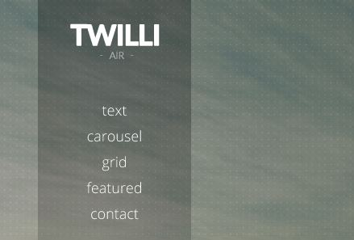
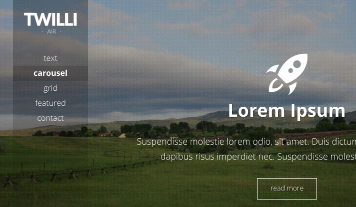
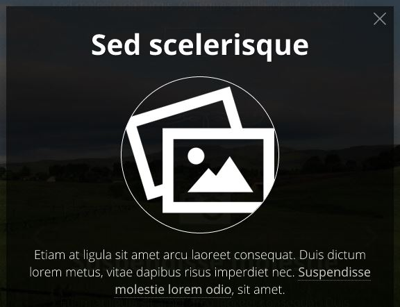
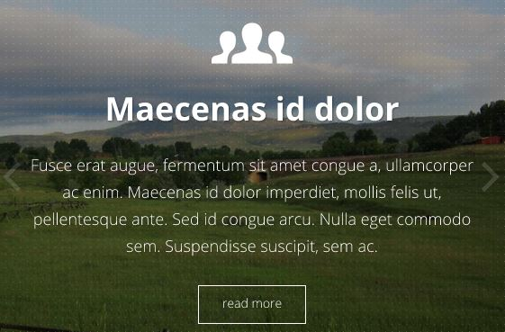
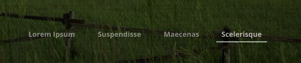
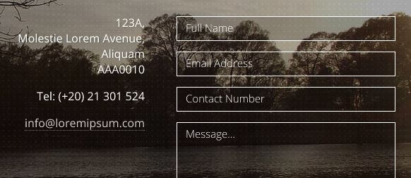
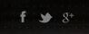

Table of Contents
- About TWILLI Air Theme
- What's Included
- HTML Structure
- Main Menu
- Sections
- Page Background Images
- Content Popups
- Carousel
- Image Carousel in Popup
- Contact Form
- Scalable Font Icons
- Social Icons
- Sources and Credits
About TWILLI Air Theme - top
TWILLI Air is a responsive one-page scroll HTML/CSS/JS theme/template, with a simple and minimalist concept.
The template is best suited for websites with minimal and concise content, but allows for more content to be displayed in elegant popups.
Bootstrap 3.2.0 is used in the theme sections structure.
What's Included - top
Included with this theme are the following:
- index.html - the main theme file from where you can edit the website's content.
- index_w_extra_comments.html - the same index.html but with extra documentation/inline comments.
- assets/
- bootstrap/ - includes the Bootstrap dist files. It is NOT recommended to edit these files.
- css/ - includes the TWILLI Air theme style (styles.css) and the font files. It also includes custom.css, which is intended to include your custom styles for your website.
- images/ - all the images used in the theme are found in this folder
- theme_images/ - DO NOT DELETE these images as they are needed for the theme styling.
- other_images/ - these are the theme images used as "dummy" content to populate the website. Replace these with your images.
- js/ - includes the JS scripts used in the TWILLI Air Theme.
- functions.js - this includes all the javascript custom functions used in the website. This is the uncomressed version which you can use for editing / further development. The index.html file by default links to the minified version functions.min.js
- functions.min.js - the compressed/minified version of functions.js
- initialise-functions.js - all the functions in functions.js above are initialised in this file (on document/window load, and on page resize).
- php/ - includes mail.php which is the mailer of the contact form found in the website.
- documentation/ - includes the documentation page and a detailed changelog for TWILLI Air (index.html and changelog.html respectively). Extra comments are found inline inside the main index.html theme file.
HTML Structure - top
The main page (index.html) of TWILLI Air is structured as follows:
Main Menu - top

To edit the main menu, you have to look for the <ul id="main-menu">.
- Each menu item links to a section (see section Sections below) in the main content.
- Each menu item should follow this format:
<li id="menu-item-[link section unique id]" class="menu-item scroll"> <a href="#[link section unique id]">[Link text to the section]</a> </li> - If you want to include a link which doesn't scroll to a section inside the page, remove the "scroll" class from the <li>, and include the external link in the <a href="[link]">
Sections - top
Each website section is contained in an <article class="section-wrapper"> tag inside the <section id="main-content">.
- It is important that each section is given a unique id.
- You can set a custom background for each section by setting a "data-custom-background-img" attribute for the <article> tag. This should be a URL linking to a background image. (More information about the website background(s) is found in the section Page Background Images below)
- The theme includes six types of sections:
- Intro Text - includes a header, a short paragraph, and can include a button.
- Text / Generic - includes generic content (text, images, etc).
- Carousel - includes a Bootstrap slider, with each slide containing an icon, text, and an optional button.
- Features Grid - includes a grid with separate feature items each having an icon and a short sentence.
- Featured Items - includes a maximum of 3 features consisting of a thumbnail and a short sentence. Each item may be linked.
- Contact - includes a short paragraph and a contact form. (IMPORTANT: change the email address at the top of the assets/php/mail.php file to the email address that you want this form to send to)
<article id="[section id]" class="section-wrapper clearfix" data-custom-background-img="[optional background image URL]"> <div class="content-wrapper clearfix"> [... content to edit ...] </div> </article>
Sections Intro/Reveal Animations
TWILLI Air includes WOW.js and animate.css to create a smooth intro reveal effect when the user scrolls to each section.
As explained on the WOW website, you can add reveal animations to any html element:
- Pick an animation style in Animate.css
- Add the CSS class to any HTML element
The template comes with reveal animations already set for the intro section at <div class="content-wrapper clearfix wow fadeInDown">. You can edit this or add other effects to any other HTML elements inside the page.
Page Background Images - top

The theme is designed to have at least ONE high-resolution page background image, which stretches along the whole page.
To set the default page background image, insert the image URL in the <div id="outer-background-container"> at the beginning of the <body> tag, as indicated:
Custom Page Backgrounds for each section
The theme allows the possibility for the background image to change whenever a user scrolls to each section.
You can set a different background image for each section by including the image URL in the "data-custom-background-img" attribute for each <article class="section-wrapper">. (Read Sections above for more about each section)
If no background image is specified for a section, the default background image is shown by default.
Semi-transparent black overlay
The theme design includes a semi-transparent patterned black overlay on top of the background images. This ensures that the white text is readable. If you want to remove this overlay, comment/remove the <div class="background-image-overlay"></div>.
Background Images on Mobile
The template is intended to show only one background image on mobile in order for the site to load faster and minimize the data being transferred. Although not recommended, you can still enable the background changes on scroll, on mobile, by doing the following:
In /assets/js/initialise-functions.js, search for the "ON WINDOW SCROLL", and remove the following exact text:
&& !jQuery.browser.mobile
Content Popups - top

Although TWILLI Air theme is intended to be minimalist as possible, you can still include more content in popups.
To add a new popup, create a <div class="content-to-populate-in-modal"> anywhere inside the page, give it a unique id, and insert content, as below:
Then, to link a button/link to this popup, add an onClick event to the link/button as indicated below:
Initialising custom Javascript functions after popup is open/closed
If you want to initialise a custom JS function after the popup is opened: In the JS file /assets/js/initialise-functions.js, add the following in the initialise_document_ready_functions():
If you want to initialise a custom JS function after the popup is closed: In the JS file /assets/js/initialise-functions.js, add the following in the initialise_document_ready_functions():
Keep in mind the these two event handlers above apply EVERY TIME a popup is opened/closed. If you want to apply a custom Javascript function to a SINGLE POPUP (instead of all):
- Wrap the particular popup's content inside a container with a unique ID. Example:
<div class="content-to-populate-in-modal" ...... > <div id="unique-id"> [POPUP Content] </div> </div><!--.content-to-populate-in-modal--> - Then, modify the function that was added above in initialise-functions.js, as below:
$('#common-modal').on('shown.bs.modal', function() { if ($('#common-modal #unique-id').length > 0) { // function to initialise when ONLY this popup is open } });
Carousel - top

TWILLI Air theme includes a Bootstrap carousel in one of the sections (<article id="carousel">).
Each carousel within the page should consist of the following (taking our example as guide):
- The carousel is contained inside a container as below:
<div id="[unique id for each carousel]" class="carousel slide with-title-indicators max-height" data-height-percent="70" data-ride="carousel"> [...] The unique id is important, and needs to be initialised in the JS file /assets/js/initialise-functions.js, as below:$('#[unique id for each carousel]').carousel({ [...] }); The "data-height-percent" attribute is optional, and set the percentage height that the carousel should have in proportion of the window height (on large, non-mobile viewports). - The carousel includes indicators (slide titles as navigation):

These are found inside <ol class="carousel-indicators title-indicators">, and should represent all the carousel slides.
It is important that the "data-target" attribute for each indicator is the unique id of the carousel. - Each carousel slide is found inside <div class="carousel-inner">, as follows:
<div class="carousel-inner"> <!-- slide --> <div class="item active"> <div class="carousel-text-content"> [... custom slide content ...] </div> </div><!-- end: slide --> </div> - The carousel includes navigation left/right arrows to move from one slide to another. These are found at the bottom of the carousel container:
<a class="left carousel-control" href="#[unique id for each carousel]" data-slide="prev"></a> <a class="right carousel-control" href="#[unique id for each carousel]" data-slide="next"></a> It is important that the "href" attribute for each link is the unique id of the carousel.
Image Carousel in Popup - top

The theme also includes Owl Carousel, a responsive slider/carousel which allows you to create elegant image sliders.
In TWILLI Air, Owl Carousel can be placed inside a popup (see section Content Popups above), and initialised when the popup is opened.
The content for the image carousel is placed inside the <div class="content-to-populate-in-modal"> as below:
Every Owl Carousel which are found inside a popup and have a class of ".popup-image-gallery" are initialised in the /js/initialise-functions.js when the popup is visible, using the Bootstrap "shown.bs.modal" carousel event handler:
The Owl Carousel parameters here can be modified how you want. More information on these can be found on the Owl Carousel website: www.owlgraphic.com/owlcarousel
Since the carousel is in a popup, an extra function in /js/initialise-functions.js destroys the carousel when the popup is closed (it would be re-initialised when popup is re-opened). This is done using the Bootstrap "hide.bs.modal" carousel event handler and the Owl Carousel destroy() function:
Alternative Image Gallery Carousel

The template also offers an alternative image gallery carousel inside a popup. Similar to the instructions mentioned above, the content for the alternative image carousel is placed inside the <div class="content-to-populate-in-modal"> as below:
Every alternative image gallery which are found inside a popup and have a class of ".popup-alt-image-gallery" are initialised in the /js/initialise-functions.js when the popup is visible, using the Bootstrap "shown.bs.modal" carousel event handler, as described above.
Please note that although TWILLI Air comes with this type of image carousel INSIDE a popup, you can still use Owl Carousel anywhere in the theme where you want. If you want to do so, or to create a different carousel with different parameters, use the same HTML described above but remove the class ".popup-image-gallery". Then, intialise it in /js/initialise-function.js or at the footer of the page using the unique ID of that particular carousel instead of the class.
Contact Form - top

When installing this theme, it is important to change the 2 email addresses at the top of the assets/php/mail.php file:
- $email_to - the email address that you want this form to send to.
- $email_from - the "From:" email address with which form submissions are sent (important that it has the same domain as the domain of your site - unless you have configured your server's mail settings)
The form includes the following fields:
- Full Name - required
- Email Address - required
- Contact Number
- Message - required
The form also includes a CAPTCHA, intended to filter spam. The captcha only works if a PHP server is set (locally you need to use a tool like XAMPP, WAMP, or MAMP).
Scalable Font Icons - top
TWILLI Air makes use of two scalable font icon sets:
- Glyphicons
- Font Awesome
Glyphicons
To add a Glyphicons icon, use the following code:
<span class="glyphicon glyphicon-[icon id]"></span>, OR:
<i class="glyphicon glyphicon-[icon id]"></i>
The full list of the available icons and their IDs can be found on: getbootstrap.com/components.
Font Awesome
To add a Font Awesome icon, use the following code:
<span class="fa fa-[icon id]"></span>, OR:
<i class="fa fa-[icon id]"></i>
The full list of the available icons and their IDs can be found on: fortawesome.github.io/Font-Awesome/icons/.
Remember that these icons should be treated as "text" rather than an "image icon". This means that if, for example you want to change their colour, you should use the CSS "color" rule, as you do to any text. If you want to increase their size, you have to alter their "font-size" value... and so on.
Social Icons - top

To edit the social icons list, you have to look for the <ul class="social-icons">.
- Each social icon item should follow this format:
<li><a href="[social page link URL]" target="_blank" title="[social website]"> <img src="assets/images/theme_images/social_icons/[social website].png" alt="[social website]"> </a></li> - A list of social icons options (which are used in the <img>) is found in the directory /assets/images/theme_images/social_icons/
Sources and Credits - top
Resources:
- jQuery 1.11.2 - http://jquery.com/
- Bootstrap 3.3.1 - http://getbootstrap.com/
- jQuery Easing 1.3 - http://gsgd.co.uk/sandbox/jquery/easing/
- Backstretch - http://srobbin.com/jquery-plugins/backstretch/
- Owl Carousel 1.3.2 - http://www.owlgraphic.com/owlcarousel/
- Detect Mobile Browsers - http://detectmobilebrowser.com/
- Font Awesome 4.2.0 - http://fortawesome.github.io/Font-Awesome/
- Lightbox 2.7.1 - http://lokeshdhakar.com/projects/lightbox2/
Fonts:
- Google Fonts - https://www.google.com/fonts
- Font Squirrel - http://www.fontsquirrel.com/
Images:
- Morguefile - http://www.morguefile.com/
- iconmonstr - http://iconmonstr.com/
TWILLI Themes